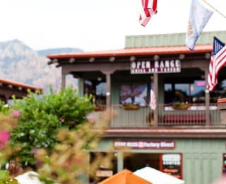
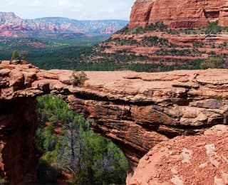

Седона
Седона — небольшой городок в Аризоне, заслуживающий большего!
Рассмотрим 5 причин, по которым Седона круче, чем гранд каньон!
Настоящий городок
Седона не атракцион для туристов, там течет своя жизнь
 Жилье
Рекомендуем пожить в настоящем мотеле, все как в кино!
Еда
Всегда заказывайте фирменный бургер, вы не разочаруетесь!
Сувениры
Не только китайского, но и местного производства!
Там есть мост дьявола
Да, по нему можно пройти! Если вы осмелитесь, конечно
 Небольшая площадь
Все интересные места находятся очень близко
Красивая дорога
Ехать в седону из Лас-вегаса совсем не скучно!
мало туристов
Большинство едет в гранд каньон и толпится там
Заинтересовались?
Укажите предполагаемые даты поездки, и мы покажем вам лучшие предложения гостиниц в седоне
Найти гостиницу